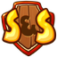
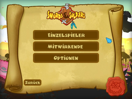
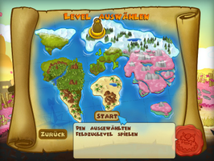
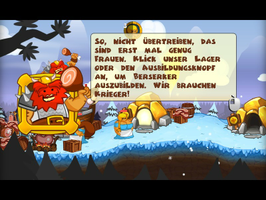
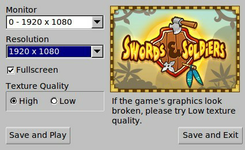
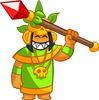
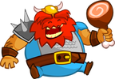

Swords & Soldiers
Dieser Artikel wurde für die folgenden Ubuntu-Versionen getestet:
Ubuntu 16.04 Xenial Xerus
Zum Verständnis dieses Artikels sind folgende Seiten hilfreich:

Swords & Soldiers 
 ist ein kommerzielles 2D-Echtzeitstrategiespiel. Drei Fraktionen stehen sich im Krieg gegenüber: Die Azteken, die Chinesen und die Wikinger. Jede Fraktion hat ihre eigenen Kämpferklassen und Zauberer, die sie in den Krieg schicken kann. Die Ausbildung und die Verwendung von Magie verbrauchen jedoch Gold und Mana. Es muss abgewogen werden, welches Ziel man verfolgt. Beschafft man Rohstoffe? Investiert man das Gold in Einheiten oder in die Erforschung neuer Technologien? Jede getroffene Entscheidung wirkt sich auf das Spielgeschehen aus...
ist ein kommerzielles 2D-Echtzeitstrategiespiel. Drei Fraktionen stehen sich im Krieg gegenüber: Die Azteken, die Chinesen und die Wikinger. Jede Fraktion hat ihre eigenen Kämpferklassen und Zauberer, die sie in den Krieg schicken kann. Die Ausbildung und die Verwendung von Magie verbrauchen jedoch Gold und Mana. Es muss abgewogen werden, welches Ziel man verfolgt. Beschafft man Rohstoffe? Investiert man das Gold in Einheiten oder in die Erforschung neuer Technologien? Jede getroffene Entscheidung wirkt sich auf das Spielgeschehen aus...
|  |  |  |
| Menü | Levelauswahl | Spielszene |
Installation¶
Desura¶
Nachdem man das Spiel über die Internetseite oder den Client erworben hat, kann das Spiel installiert [1] und über diesen gestartet werden.
Entwicklerseite¶
Das Spiel kann auf der Entwicklerseite käuflich erworben werden. Hier stehen neben der Linux-Version nach dem Kauf auch Versionen für andere Betriebssysteme zur Verfügung. Nach dem Kauf kann man das Spiel von der persönlichen Seite herunterladen und installieren [1].
The Humble Bundle for Android #2¶
Das zur Rechnerarchitektur passende .deb-Paket aus der Aktion The Humble Android Bundle #2 herunterladen und installieren [2].
Das Spiel kann über "Spiele -> Swords & Soldiers" gestartet werden. Zur Konfiguration steht "Spiele -> Swords & Soldiers Setup" zur Verfügung.
Indie Royale - The Back to School Bundle¶
Das zur Rechnerarchitektur passende .deb-Paket von der persönlichen Aktionsseite  herunterladen und installieren [2].
herunterladen und installieren [2].
|  |
| Setup |
Tipps¶
Auflösung¶
Über "Spiele -> Swords & Soldiers Setup" kann der gewünschte Monitor angesteuert und die passende Auflösung eingestellt werden.

Infobox¶
| Swords & Soldiers | |
| Genre: | Echtzeitstrategie |
| Sprache: |    |
| Veröffentlichung: | 2009 |
| Publisher: | Ronimo Games |
| Systemvoraussetzungen: | 1 GHz Protessor / 512 MiB RAM / ~270 MiB Festplattenspeicher |
| Medien: | Download |
| Strichcode / EAN / GTIN: | - |
| Läuft mit: | nativ |
|  |  | |
| Azteken | Chinesen | Wikinger |
- Erstellt mit Inyoka
-
 2004 – 2017 ubuntuusers.de • Einige Rechte vorbehalten
2004 – 2017 ubuntuusers.de • Einige Rechte vorbehalten
Lizenz • Kontakt • Datenschutz • Impressum • Serverstatus -
Serverhousing gespendet von